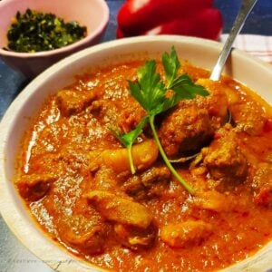

A Recipe of Beef Stew

I am glad to finally be able to share with you my classic Kenyan beef stew recipe. Beef is slowly stewed in tomatoes, curry powder, and other spices to give you some hearty and fork-tender stew to serve alongside some Swahili pilau or your favorite side dishes!
You can make this beef stew on the stovetop or using your Instant Pot or Pressure Cooker.
Ingridients
- Cutting board - to chop the beef. You can also ask your butcher to cut it for you.
Sharp knife
- A medium-sized pot or pan - just make sure the pan is wide or deep enough for the stock.
- 6 or 8 Quart Instant Pot - for the instant pot method.
- Stewing beef - use other cuts of meat if you prefer, just make sure that it does not have too many bones.
- Spices - curry powder, black pepper, smoked paprika, turmeric.